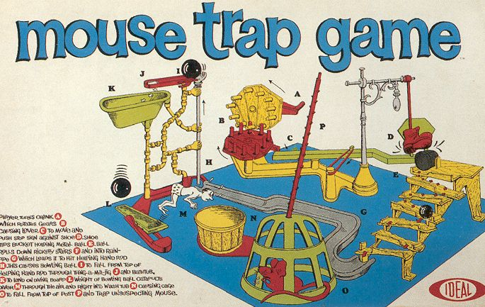
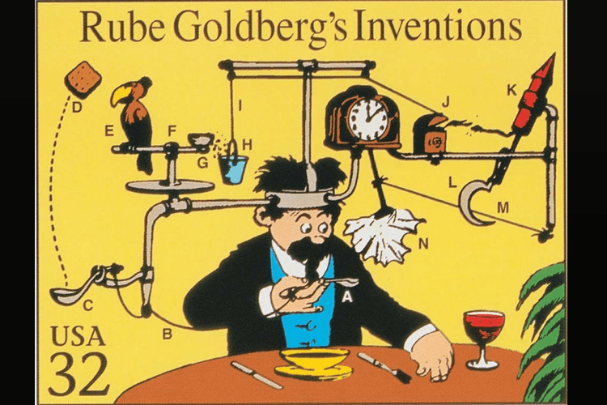
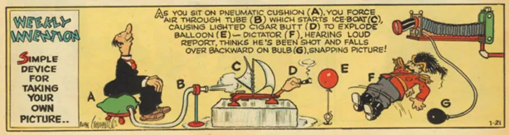

Search
The Mousetrap is a board game invented by Marvin Glass & Associates created a Rube Goldberg insipered game.
The first published by ideal in 1963 for two-four players. It was a mass-produced three-dimensional board games. When Marvin design his game, he wanted to be a 3-Dimensional board game
which the players can build it vertically. He turned to get help with his employees, Gordon Barlow and Burt Meyer. Those two conceived the Mouse trap concept and have itt ready in the Toy Fair in 1963.
The game is a rolling dice with Mouse going in a circle path, in the time not many people were in the board games. Before they publish it, both Marvin and Burt went and took the game to show to Milton Bradley to seeif the popular board game company might be interested.
They were both surprised at the reaction from the president of Milton Bradley, James Shea Sr. thought it was a terrible idea. "This is not a game, this is nothing," he said. "A game, you play it on a borad and you roll dice, but this this is a lot of plastic junk. We can't use this", he said.
Parker Brothers also turned them down. But Glass had the last luagh. The game, released by ideal, wound up selling 1.2 million copies in 1963 alone.

The idea that came to Marvin the creator of the mousetrap game, was from Reuben Garrett Lucius Goldberg, known best as Rube Goldberg.
He is a: cartoonist, sculptor, author, engineer, and inventor. He is more known for the cartoon with complicated gadgets performing a simple task like, a hair cut, to watering the flowers. He born in July 4, 1883 in San Francisco and died in December 7, 1970 in New York.
In his life, he earned two awards for Outstanding Cartoonist of the year and Pulitzer Prize for Editorial Cartooning. Goldberg even made a book called "Rube Goldberg Invention", were he draws a complex machinary in order to do one simple task, like watering the flowers or even tipping his hat.
His famous work insipered lots of people to make the wierdest most complex machines ever fo rthe most basic thing

